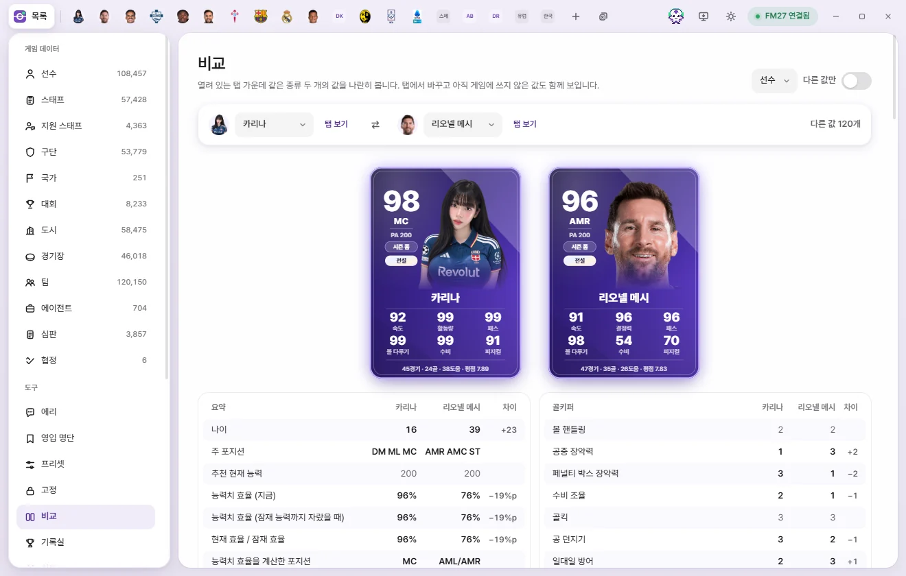

Tools
Compare
Place two open tabs of the same type (two players, two clubs, and so on) side by side to see how their values differ. Compare is strictly read-only and writes nothing to the game.


How to open Compare
Compare works across already open tabs, so you need at least two tabs of the same type open first.
- From a list, open the two players (or two clubs, etc.) you want to compare in tabs.
- Click the Compare button (shaped like two squares) near the top right of either tab.
- The Compare screen opens with the tab you clicked on the left and the other tab of the same type on the right.
You can also open Compare from Tools in the left sidebar. If you don't have two tabs of the same type open yet, you'll see 'Open two tabs of the same type'. Clicking the Compare button on a tab when no second tab of that type is open prompts you to open one more tab of that type to compare.
Screen layout
Top bar
- Type picker (top right): When you have pairs of tabs open for more than one type (for example, two players and two clubs), pick which type to compare.
- Differences only: Hides rows where both sides match so only differing values remain on screen.
- Left & right pickers: Click either name field to switch to another open tab of the same type. Whichever tab is chosen on one side is hidden from the other side's dropdown.
- View tab: Jumps straight to that person's or item's tab.
- Center ⇄ button: Swaps the Left and right sides.
- Far right: Shows the count of differing values or 'All values match'.
Player cards
When comparing players, both player cards appear near the top. Because player cards are drawn from live in-game values, edits you've made on a tab without saving won't show up on the cards. For what each part of the card means, see Stats, player cards, and Record room.
Value tables
Fields are organized into the same groups used on edit tabs (Technical, Mental, Goalkeeping, Personality, and so on). At the very top, the Summary group shows calculated readouts such as age, Primary position, Recommended Current Ability, and Attribute effectiveness.
| Column | Meaning |
|---|---|
| Field | Field name as shown on the edit tab |
| Left | Value from the Left tab |
| Right | Value from the right tab |
| Diff | Right value minus Left value. Shown only when numeric values differ—rates in percentage points (%p), and money in your chosen currency |
Rows where the two sides differ are highlighted. Dropdown choices, dates, and text fields display both values side by side without calculating a diff. List-based sections (such as relationships and languages) are not shown in Compare.
Unsaved edits
The value tables in Compare read what is currently shown on each tab—including edits you've typed into a tab without clicking 'Save' yet. That lets you tweak attributes on a tab and immediately check how the player stacks up against someone else. When you're ready to write those edits into FM, head back to that tab and click 'Save' (When edits are written to the game).